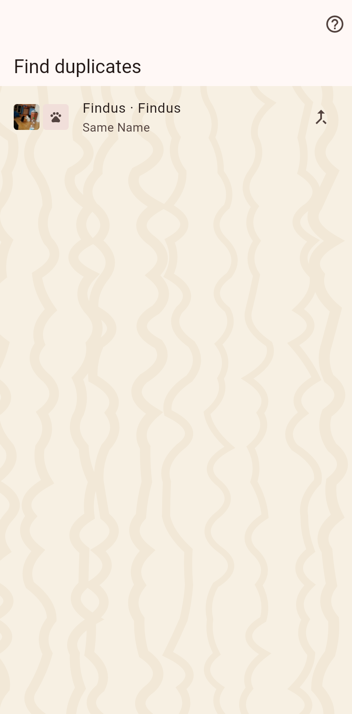

Cats or homes that look like the same one twice: identical IDs, or very similar names with matching details. A merge keeps one and folds the other into it.

The page lists pairs that look alike. A tap on a pair merges it after asking which one survives; a hold opens the first to compare.
On the strays list: cats that might be the same animal as a missing cat. An identical chip ID, a stray seen inside a missing cat's possible stray area, or looks that agree in two traits or more with nothing contradicting; the chips show which traits. "Not the same" hides a pair on this phone until either animal's looks change.
You pick the survivor. Its current values win, the other record's history joins the survivor's timeline, the other record ceases to exist. Where the cat lives is decided by the latest move of either record, so a flier's stray keeps its ran-away day when merged into the cat already in the catalog. A moment is recorded first; the merge itself cannot be undone, so it asks.